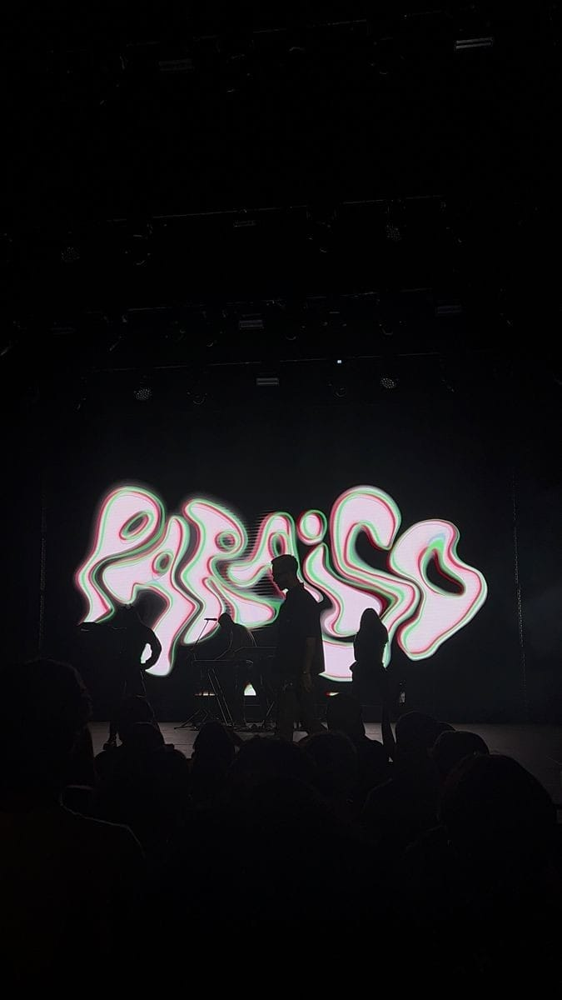

Los inicios del exitoso cantante Gabriel Mora Quintero "Mora"

Desde sus primeros pasos en la escena underground del hip-hop argentino, Mora destacó por su habilidad para improvisar y su estilo único. Sus letras, cargadas de realismo y experiencias personales, resonaban con una audiencia ávida de autenticidad. Con el paso del tiempo, su reputación creció, y pronto se convirtió en una figura prominente en la escena musical de Argentina.
Fue en el año 2016 cuando Mora lanzó su primer sencillo oficial, titulado "No Hay Mañana". La canción rápidamente se convirtió en un éxito, colocándolo en el radar de la industria musical latinoamericana. Con un estilo que fusionaba el hip-hop con elementos de trap y reggaetón, Mora encontró su voz distintiva, atrayendo a una audiencia diversa y apasionada. En los años siguientes, Mora continuó lanzando música exitosa, colaborando con artistas de renombre internacional y explorando nuevos sonidos y estilos. Su evolución artística y su dedicación a su oficio lo han mantenido relevante en una industria que está en constante cambio.
Su ascenso meteórico continuó con el lanzamiento de su álbum debut, "Primero Hay Que Saber Sufrir", en 2018. El disco recibió elogios de la crítica y consolidó a Mora como uno de los nombres más importantes de la música urbana en Argentina. Canciones como "De Nada Sirve" y "Una Noche Más" se convirtieron en himnos para una generación que buscaba identificación en sus letras sinceras y emocionales.
Con el éxito de su primer álbum, Mora emprendió giras por toda América Latina, llevando su música
a nuevas audiencias y consolidando su estatus como un ícono de la música urbana. Su estilo fresco
y su carisma en el escenario lo convirtieron en un favorito de los festivales de música y eventos
en vivo.
Hoy en día, Mora sigue siendo una fuerza influyente en la escena musical latina, inspirando a una
generación de artistas emergentes y cautivando a un público fiel con su música auténtica y apasionada.
Su historia es un testimonio del poder de la perseverancia y la pasión en la búsqueda de los sueños.